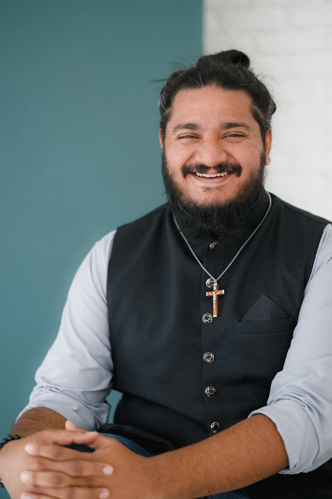

Free to be Faithful
Institute for Christian Studies
Winter 2027 · Six-week online seminar · 6:30 PM ET
Decolonizing
The Great Commission
Rethinking mission through a decolonized, Jesus-shaped lens
Course information & registration · f2bf.icscanada.edu/courses